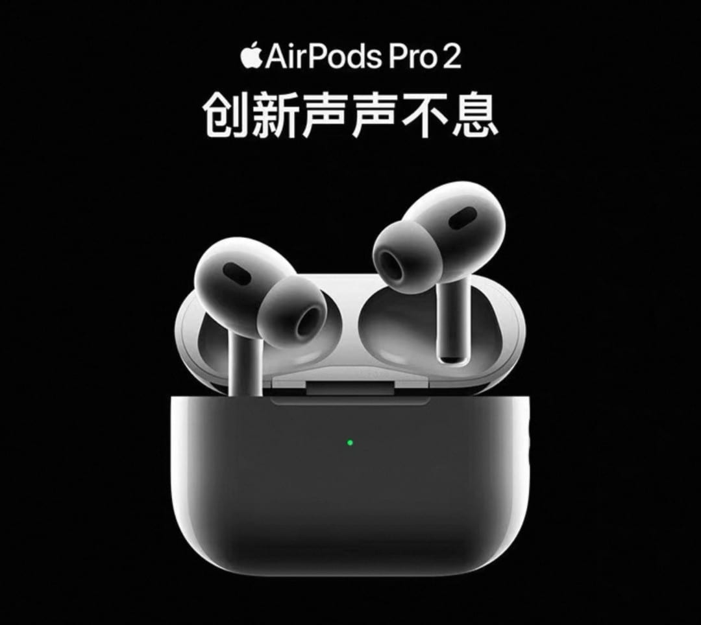

苹果 AirPods Pro（初代）

带降噪的入耳真无线，通透模式自然流畅
客观评测
AirPods Pro（初代）搭载 H1 芯片，蓝牙 5.0，采用入耳式设计与定制高振幅动圈单元，支持主动降噪与通透模式，内置内向式麦克风实时校准音频。单耳重 5.4g，单次续航约 4.5 小时（降噪开启），配合无线充电盒累计约 24 小时。IPX4 抗汗防水，随附三种尺寸硅胶耳塞，支持力度感应操控与「嘿 Siri」。实测降噪对低频噪声效果显著，通透模式自然度业界领先，后续固件加入的空间音频进一步增强影音体验。
主观点评
AirPods Pro 的降噪一打开，办公室的空调声和地铁轰鸣瞬间被压下去，虽不及头戴旗舰深沉，但对真无线而言已属优秀。入耳设计隔音更好，低频比初代扎实得多，流行乐听感饱满。通透模式是最大惊喜，戴着和同事说话几乎像没戴耳机，耳压感也处理得当。耳塞柔软、佩戴稳固，运动出汗也不怕。它把降噪真无线做成了大众消费品，也让 AirPods 家族真正有了「Pro」的底气。
优点与不足
- 降噪与通透模式表现均衡，通透自然度领先
- 入耳佩戴稳固，IPX4 适合运动场景
- 苹果生态无缝切换，空间音频体验出色
- 降噪深度不及同代头戴旗舰
- 单次续航 4.5 小时偏短
- Lightning 接口，与安卓兼容性一般
参数规格
| 类型 | 真无线入耳 |
|---|---|
| 单元 | H1 芯片定制高振幅动圈 |
| 蓝牙 | 蓝牙 5.0（H1 芯片） |
| 降噪 | 主动降噪 + 通透模式 |
| 续航 | 单次约 4.5 小时（降噪开启），配合充电盒约 24 小时 |
| 充电 | Lightning / Qi 无线充电盒 |
| 重量 | 单耳 5.4g，充电盒 45.6g |
| 防护 | IPX4 抗汗防水 |
| 耳塞 | 三种尺寸硅胶耳塞 |
| 传感器 | 内向式麦克风 + 力度感应 |